Emprendimiento
Es la capacidad de crear ideas, organizar recursos y desarrollar un proyecto que ofrezca un producto o servicio útil para la comunidad.
Definición corta: idea que se convierte en proyecto útil.
Grado 10 · Actividad escolar
Una guía educativa organizada con el contenido del documento principal, presentada con un estilo de enciclopedia moderna y lectura agradable.
Esta página reúne información organizada sobre emprendimiento, peligros de internet y seguridad vial para facilitar su estudio y lectura. El contenido se presenta de forma clara, con apartados temáticos y una estructura visual inspirada en una enciclopedia moderna.
Términos clave
Es la capacidad de crear ideas, organizar recursos y desarrollar un proyecto que ofrezca un producto o servicio útil para la comunidad.
Definición corta: idea que se convierte en proyecto útil.
Es una entidad de innovación que apoya la creación de empresas con base tecnológica y ofrece asesorías, espacios y contactos con inversionistas.
Definición corta: apoyo para emprender con tecnología.
Es una entidad que ayuda a crear y fortalecer empresas mediante asesorías, cursos, ferias y programas orientados a emprendedores.
Definición corta: apoyo institucional para negocios.
Es una organización que promueve el emprendimiento entre estudiantes y ciudadanos mediante mentorías, acompañamiento y capacitación para desarrollar proyectos.
Definición corta: espacio de formación y acompañamiento.
Es el Servicio Nacional de Aprendizaje, una entidad que capacita emprendedores y ofrece recursos para iniciar nuevos negocios.
Definición corta: formación y apoyo para emprendedores.
Es una iniciativa que apoya empresas innovadoras con programas de formación, financiación y acompañamiento para fortalecer su crecimiento.
Definición corta: apoyo para negocios innovadores.
Es una entidad financiera que facilita créditos y soluciones para impulsar el crecimiento de las empresas en Colombia.
Definición corta: financiamiento para emprender.
Es un tipo de emprendimiento que desarrolla aplicaciones, plataformas y servicios digitales para resolver necesidades actuales de las personas.
Definición corta: negocio basado en tecnología.
Es un tipo de emprendimiento enfocado en la venta de productos o servicios que responden a las necesidades de los consumidores.
Definición corta: negocio orientado a vender.
Es un tipo de emprendimiento que busca resolver problemas de la comunidad y generar un impacto positivo mientras crea valor.
Definición corta: negocio con impacto social.
Son noticias falsas o información engañosa que se difunde por internet o redes sociales para confundir, manipular la opinión pública o conseguir visitas.
Definición corta: información falsa en internet.
Es el análisis de grandes cantidades de datos para encontrar patrones, mejorar servicios y tomar decisiones más informadas, aunque también exige cuidado con la privacidad.
Definición corta: análisis de grandes datos.
Es el acoso que ocurre a través de internet mediante mensajes, publicaciones, imágenes o amenazas que buscan intimidar o afectar a otra persona.
Definición corta: agresión por medios digitales.
Es la necesidad excesiva de usar internet o dispositivos electrónicos hasta el punto de afectar el estudio, el trabajo o las relaciones personales.
Definición corta: uso excesivo de la tecnología.
Es el comportamiento de ignorar a las personas que están presentes porque se presta más atención al teléfono celular.
Definición corta: descuido por mirar el celular.
Es el miedo o ansiedad que siente una persona cuando no tiene acceso a su teléfono móvil, se queda sin batería o pierde la conexión a internet.
Definición corta: ansiedad por no usar el celular.
Son las señales y líneas en la vía que orientan el movimiento de los vehículos y permiten una circulación más segura.
Definición corta: señales que ordenan la vía.
Es la zona destinada para que los peatones crucen con mayor seguridad y los conductores deben ceder el paso.
Definición corta: zona segura para cruzar.
Es un accidente vial en el que un vehículo impacta a un peatón y puede causar lesiones graves o incluso la muerte.
Definición corta: choque de vehículo contra peatón.
Es el estado producido por consumir alcohol o sustancias psicoactivas, que reduce la capacidad de reaccionar y aumenta el riesgo de accidentes.
Definición corta: estado que pone en riesgo la conducción.
Información del equipo
Integrante 1
Estudiante del grupo encargado de presentar esta actividad escolar.
Integrante 2
Estudiante del grupo encargado de presentar esta actividad escolar.
Fuentes consultadas
Tema 1
Ruta N: Es un centro de innovación que ayuda a crear empresas con base tecnológica. Ofrece asesorías, capacitaciones, espacios de trabajo y contacto con inversionistas.
Cámara de Comercio de Medellín para Antioquia: Brinda apoyo para crear y fortalecer empresas mediante asesorías, cursos, ferias y programas para emprendedores.
Parque E: Promueve el emprendimiento entre estudiantes y ciudadanos, ofreciendo mentorías, acompañamiento y capacitación para desarrollar proyectos.
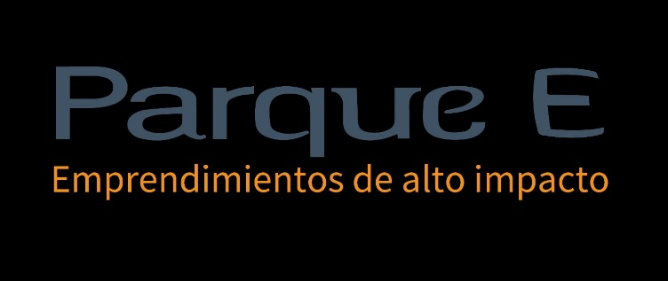
Estas entidades fortalecen el emprendimiento al ofrecer recursos, acompañamiento y oportunidades de conexión.
SENA: Capacita a los emprendedores y, por medio del Fondo Emprender, ofrece recursos para iniciar nuevos negocios.
iNNpulsa Colombia: Apoya empresas innovadoras con programas de formación, financiación y acompañamiento.
Bancóldex: Facilita créditos y soluciones financieras para impulsar el crecimiento de las empresas.
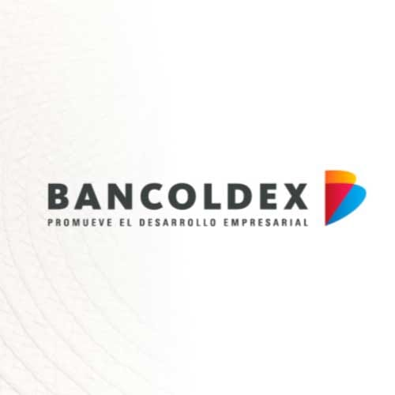
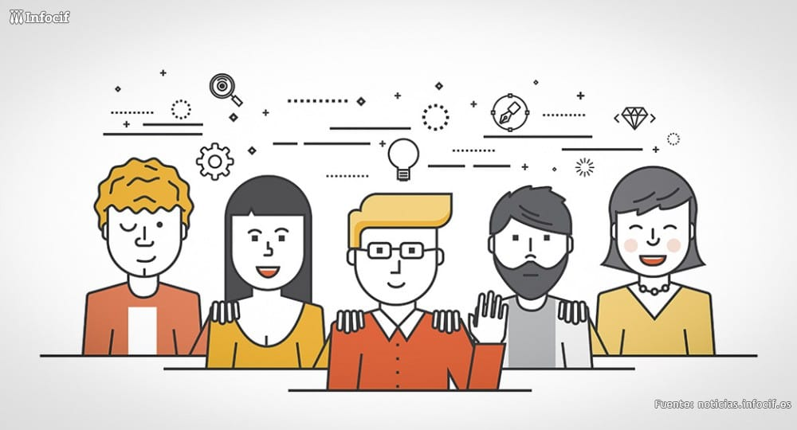
El emprendimiento en Colombia se apoya con formación, financiación y acompañamiento institucional.
Tecnológico: Desarrolla aplicaciones, plataformas y servicios digitales. Es uno de los más solicitados porque la tecnología hace parte de la vida diaria.
Comercial: Se enfoca en la venta de productos o servicios. Es muy común porque responde a las necesidades de los consumidores.
Social: Busca resolver problemas de la comunidad mientras genera un impacto positivo. Ha crecido por el interés en el desarrollo sostenible.
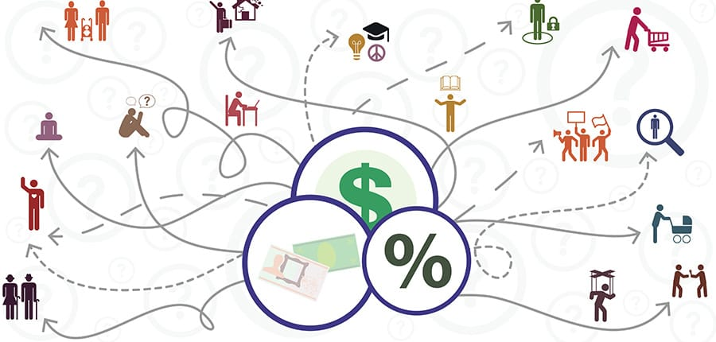
Los emprendimientos más requeridos se relacionan con la tecnología, el comercio y la solución de problemas sociales.
Tema 2
Las Fake News son noticias falsas o información engañosa que se difunde principalmente por redes sociales o internet para confundir, manipular la opinión pública o conseguir más visitas.
Las Fake News pueden afectar la percepción de la realidad y la toma de decisiones.
El Big Data es el análisis de grandes cantidades de datos. Puede mejorar servicios y facilitar la toma de decisiones, aunque también puede afectar la privacidad si la información no se maneja correctamente. En la educación permite conocer el rendimiento de los estudiantes y mejorar los procesos de aprendizaje.
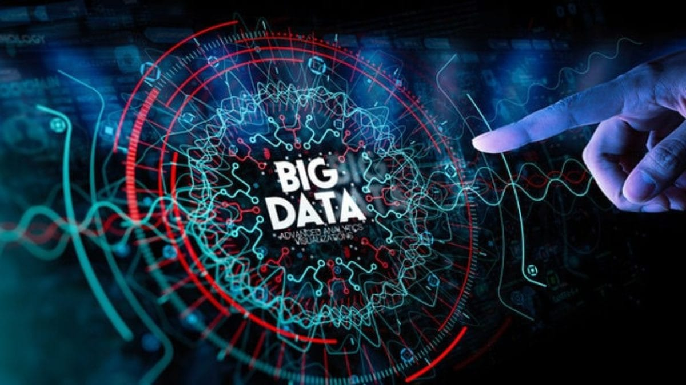
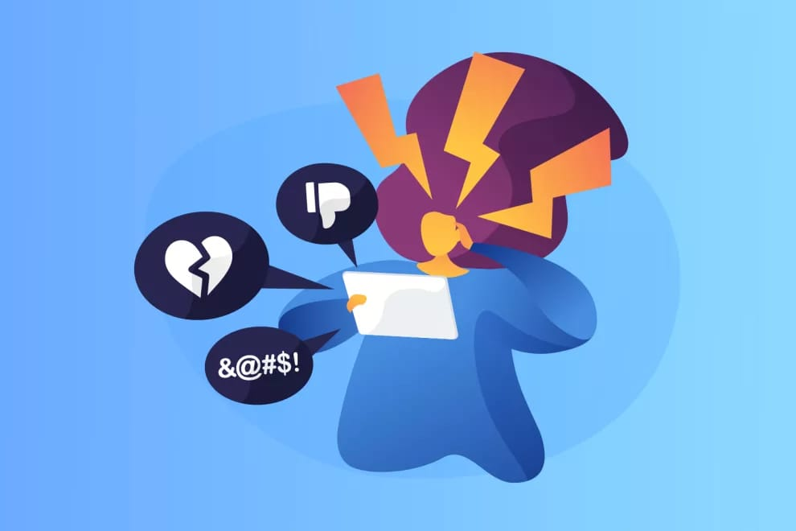
El Big Data aporta beneficios, pero requiere un manejo responsable de la información.
Es el acoso que ocurre a través de internet mediante mensajes, publicaciones, imágenes o amenazas que buscan intimidar o afectar a otra persona.
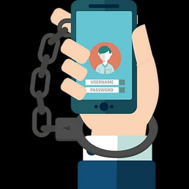
El ciberacoso puede generar daño emocional y afectar la salud mental.
Es la necesidad excesiva de usar internet o dispositivos electrónicos, hasta el punto de afectar el estudio, el trabajo o las relaciones personales.
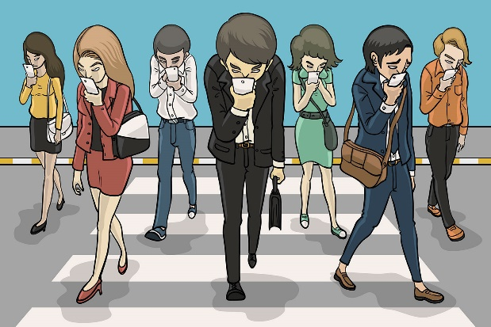
La ciberdependencia puede alterar el equilibrio entre la vida digital y la vida cotidiana.
Es el comportamiento de ignorar a quienes están presentes por prestar más atención al teléfono celular.
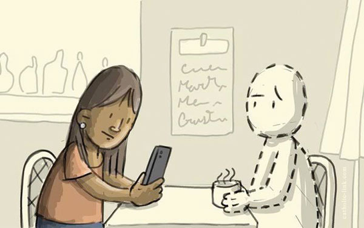
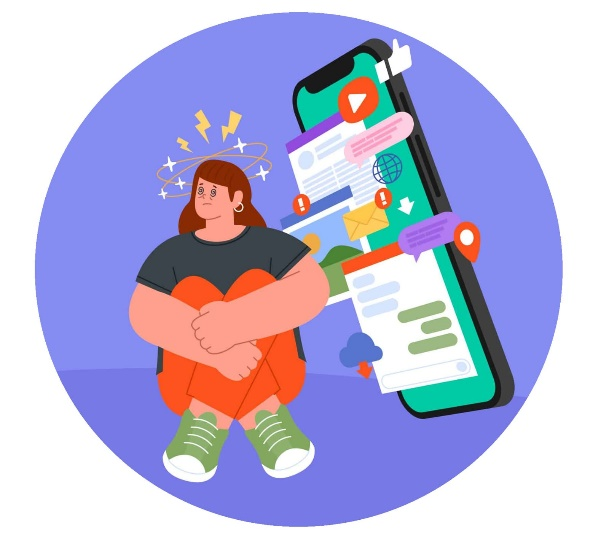
El phubbing afecta la calidad de la interacción entre personas.
Es el miedo o ansiedad que siente una persona cuando no tiene acceso a su teléfono móvil, se queda sin batería o pierde la conexión a internet.
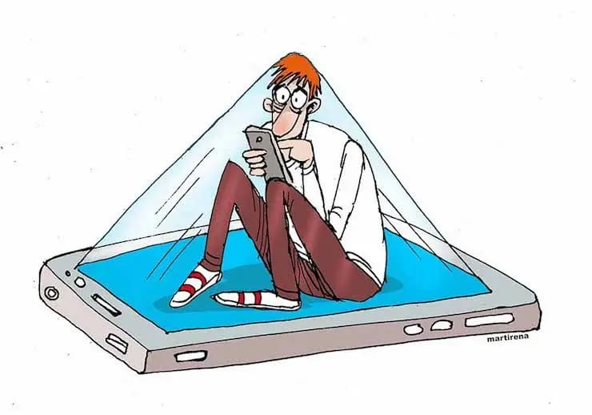
La nomofobia demuestra cómo la tecnología puede influir en el estado emocional.
Tema 3
| Tipo de accidente | Sanción |
|---|---|
| Choque con daños materiales | Multa y pago de los daños ocasionados |
| Atropello con lesiones | Multa, suspensión de la licencia y posible proceso judicial |
| Accidente por conducir en estado de embriaguez | Multa elevada, inmovilización del vehículo y suspensión o cancelación de la licencia |
| Accidente con víctimas fatales | Proceso penal, indemnizaciones y otras sanciones establecidas por la ley |
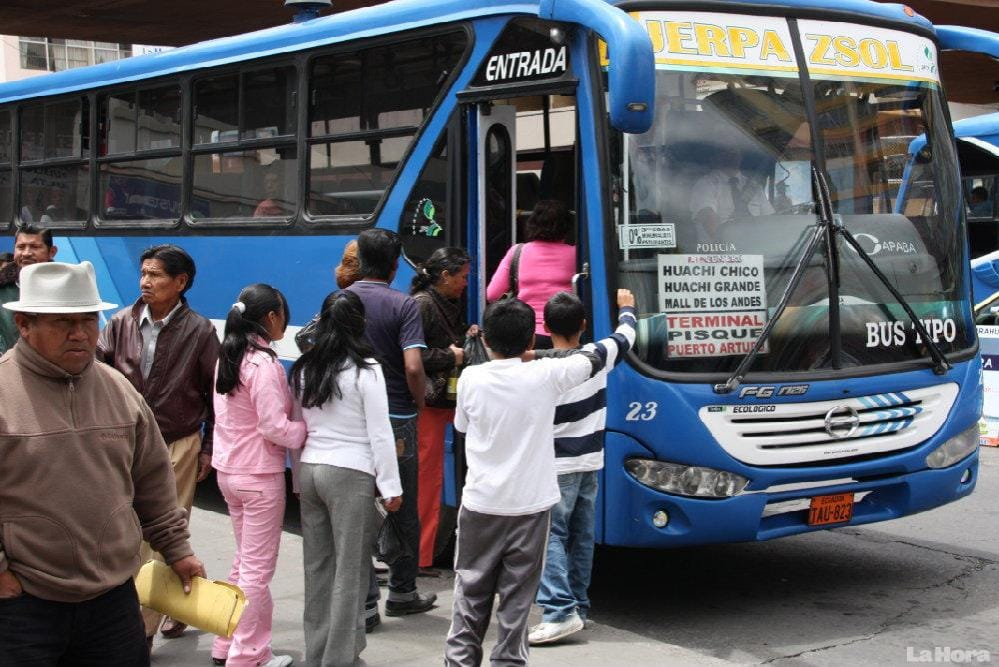